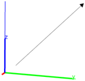

25.12.3 Reflection in space with respect to a plane, line or point
See Section
24.14.3
for reflections in the plane.
The
reflection
command creates a reflection.
reflection
takes one mandatory argument and one optional argument:
P
, a point, line or plane.
Optionally,
G
, a geometric object.
reflection(
P
)
returns a new command which reflects about
P
.
reflection(
P
,
G
)
returns and draws the reflection of
G
about
P
.
Examples
S
:=
sphere
([0,0,0],0.5);
r
:=
reflection
([1,1,1]);
color
(
S
,
blue
),
r
(
S
)

reflection
(
line
([1,1,0],[-1,-3,0]),
point
(-1,2,4))